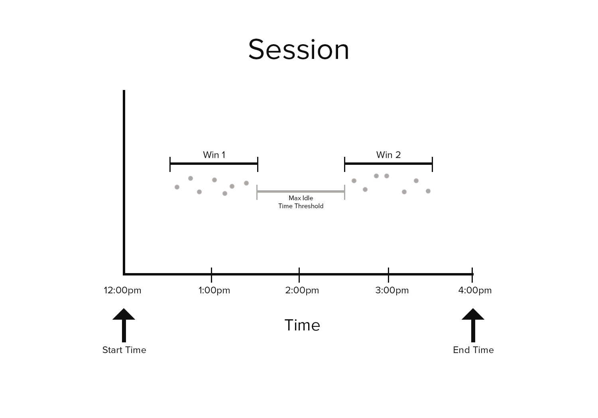

ScaleOut Time Windowing Library for JavaScript
Introduction
The ScaleOut Time Windowing Library for JavaScript provides a set of windowing functions for time-ordered arrays of events.
Installation
npm install time-windowing
Example
'use strict';
const tw = require('time-windowing');
const ONE_DAY = 24 * 60 * 60 * 1000; // milliseconds
const ONE_MINUTE = 60 * 1000; // milliseconds
// State object to be stored and analyzed
class HeartRateReading {
constructor(timestamp) {
this.beatsPerMinute = HeartRateReading.createRandomHeartRate();
this.timestamp = timestamp;
}
static createRandomHeartRate() {
return Math.floor(Math.random() * (90 - 60 + 1)) + 60;
}
}
// Generate (simulated) time-ordered array of HeartRate readings, one per minute:
const readings = [];
for (let timestamp = Date.now() - ONE_DAY; timestamp < Date.now(); timestamp += ONE_MINUTE) {
tw.addToOrdered(readings, r => r.timestamp, new HeartRateReading(timestamp));
}
// Given heart-rate readings every minute, calculate the 5-minute
// moving average of a person's heart rate for the past 24 hours.
const slidingWindows = tw.toSlidingWindows(
readings, // array to transform
reading => reading.timestamp, // how to pull the time out of a HeartRateReading object
5 * ONE_MINUTE, // size (duration) of window: 5 minutes (in millis)
ONE_MINUTE, // frequency of windows: 1 minute (in millis)
Date.now() - ONE_DAY, // start time of first sliding window.
Date.now() // end time of last window
);
// Print each window's boundaries and its heartbeat average:
for (const win of slidingWindows) {
const sum = win.reduce((total, reading) => total + reading.beatsPerMinute, 0);
const avg = sum / win.length;
console.log(`${win.startDate.toLocaleTimeString()} - ${win.endDate.toLocaleTimeString()}: ${avg}`);
}
// Output:
// 4:54:56 PM - 4:59:56 PM: 76.2
// 4:55:56 PM - 5:00:56 PM: 71.6
// 4:56:56 PM - 5:01:56 PM: 72.4
// ...The library also provides functions to manage arrays of time-ordered elements, such as the addToOrdered function used in the example above. These array management functions offer automatic eviction and ordering of elements. See the Managing Time-ordered Arrays section for details.
Windowing Functions
Three functions are provided to perform various time-windowing transformations on an ordered array:
- toSlidingWindows: Transforms an array of events into an array of overlapped (sliding) windows.
- toTumblingWindows: Transforms an array of events into an array of fixed-duration, non-overlapping windows.
- toSessionWindows: Transforms an array of events into an array of session windows.
Each windowing function returns an array of TimeWindow objects. A TimeWindow instance is itself an iterable collection of the elements in the source array whose timestamps fall within the window's time span.
The windowing functions accept a user-defined timestampSelector callback that, given and element in the source array, returns its timestamp. This timestamp is used to determine which window (or windows, in the case of the sliding windows) an element belongs to. The array must be sorted chronologically with respect to the returned timestamp.
Sliding Windows
Sliding window functions are often used to calculate the moving average of time series data. The duration of sliding windows is larger than the period between the windows, so the period of time covered by each window overlaps with its neighbors:

If no elements fall in a sliding time window, that window will be empty.
To use the library's toSlidingWindows function, the source array must be sorted chronologically. (See the Managing Time-ordered Arrays section for details about convenience functions that keep your source array sorted.)
Tumbling Windows
Tumbling windows, (or "fixed" windows), divide time series data into periodic, non-overlapping windows. Unlike sliding time windows, an element in a collection of tumbling windows may only appear in a single window.
Tumbling windows are implemented in this library as a special case of sliding window, whose window duration and frequency are the same amount of time.

If no elements fall in a tumbling time window, that window will be empty.
To use the library's toTumblingWindows function, the source collection must be sorted chronologically. (See the Managing Time-ordered Arrays section for details about convenience functions that keep your source array sorted.)
Session Windows
The duration of a session window is not fixed; rather, it is determined by the time interval between elements: if a period of idle time elapses between elements then a new session window is created.
Session windowing is often used when processing click data or other types of user activity--if a user is inactive for too long then the session window closed. A new session window is created once user activity resumes.
Unlike sliding and tumbling window functions, a session window is never empty.

Like the other windowing functions, the toSessionWindows function requires the source array collection to be sorted chronologically. (See the Managing Time-ordered Arrays section for details about convenience functions that keep your source array sorted.)
The addToOrderedAndEvictSessions function, in particular, is useful for managing an array of events that is often transformed to a set of session windows. It is able to maintain a fixed number of sessions in the array, trimming the oldest sessions if a new event triggers the creation of a new session window.
TimeWindow Objects
Instead of using an array to represent the elements in a time window, the three functions described above return their results in TimeWindow objects. A TimeWindow instance does not contain a copy of the elements it contains--rather, it is an efficient iterator over the slice of the source array whose elements fall within the window's time range. This approach avoids excessive memory allocation and array copies, reducing GC overhead.
The TimeWindow class provides a toArray() method if the elements need to be represented as an array. Use of this method may be required when working with libraries that only accept arrays, such as Math.js.
To reduce allocations when array usage is unavoidable, the TimeWindow class also provides a number of functional methods such as filter, map, and reduce. These methods work directly on the TimeWindow iterator and behave identically to their corollaries on a standard JavaScript Array object.
For example, if the Math.js library was used to calculate the average of the heart rate readings in the example above, the map method on the TimeWindow object could be used to extract values from each element more efficiently:
'use strict';
const tw = require('time-windowing');
const math = require('mathjs');
// [Setup from HeartRateReading example above elided.]
for (const win of slidingWindows) {
// Extract heart rate from readings from window and calculate average.
// BAD: Two array allocations:
const winAsArray1 = win.toArray(); // 1st array allocation
const hbArray1 = winAsArray.map(r => r.beatsPerMinute); // 2nd array allocation
const avg1 = math.mean(hbArray1);
// GOOD: One array allocation:
const hbArray2 = win.map(r => r.beatsPerMinute); // 1st array allocation
const avg2 = math.mean(hbArray2);
}In short, consider using the methods on a TimeWindow object when processing its elements. The functional style these methods promote can result in more efficient code.
Managing Time-ordered Arrays
In addition to the three windowing functions detailed above, the library provides three convenience functions to aid in the management and processing of time-ordered events. These wrappers perform the following work on your behalf:
- addToOrdered: Adds one or more elements to a time-ordered array of items, inserting them in chronological order.
- addToOrderedAndEvictOldest: Adds one or more elements and then removes the oldest element(s) if the resulting size of the destination array exceeds the supplied maxArraySize argument.
- addToOrderedAndEvictBefore: Adds one or more elements and then evicts any elements in the array whose timestamp is prior to the supplied startTime argument.
- addToOrderedAndEvictSessions: Adds one or more elements, and, if the number of sessions in the destination array exceeds the supplied maxSessionCount argument, evicts elements in the oldest session(s) in the destination array will be evicted.